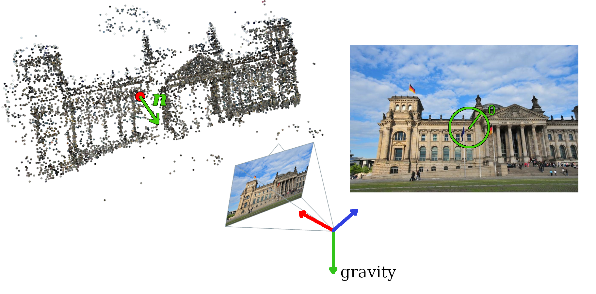
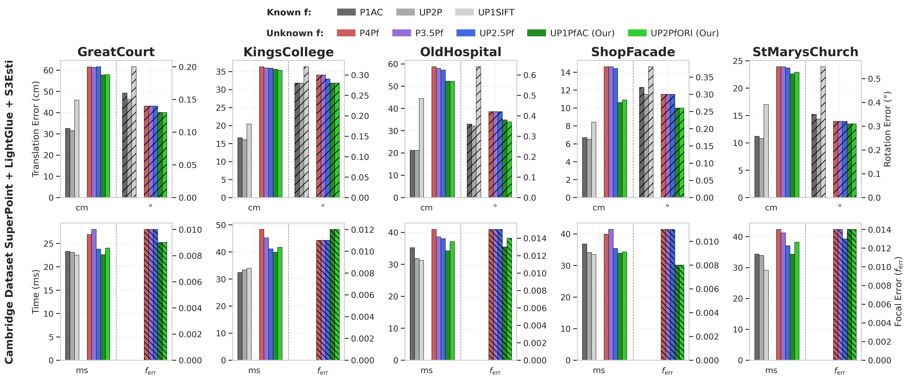
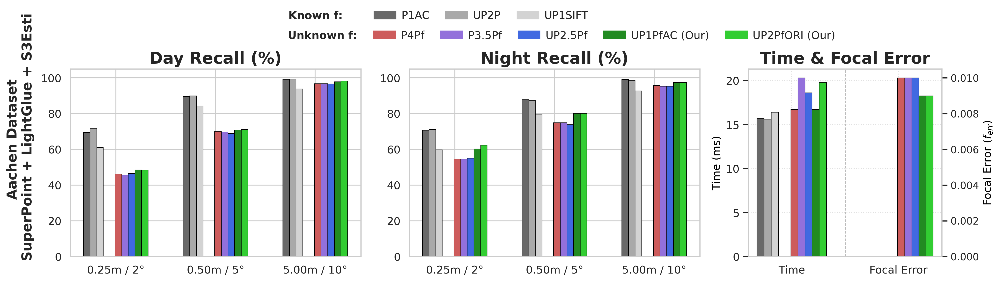

Abstract
Problem setup. The camera rotation is factored as R = Ry Rxz, with Rxz known from the IMU gravity vector. This leaves five unknowns:
Constraints. Point projections give 2 constraints. Affine-covariant descriptors add 4 new constraints (1 correspondence → 6 polynomial equations in 5 unknowns); orientation-covariant descriptors add 1 new constraint (2 correspondences → 6 polynomial equations in 5 unknowns).
UP1PfAC — 1 affine correspondence: the system is linear in translation, allowing elimination; it reduces to a quartic in r with 4 solutions. Back-substitution recovers focal length and translation, and the unused constraint selects the optimal hypothesis.
UP2PfORI — 2 orientation-covariant features: a similar reduction using determinant constraints combines feature orientation invariants with point projections, again yielding a quartic in r with analytical solutions.


@inproceedings{valtonenornhag2026gravity,
title={Gravity-aware Partially Calibrated Absolute Pose Estimation from Affine- or Rotation-covariant Features},
author={Valtonen~{\"O}rnhag, Marcus and Jaenal, Alberto and Adalbj{\"o}rnsson, Stefan},
booktitle={European Conference on Computer Vision (ECCV)},
year={2026},
}